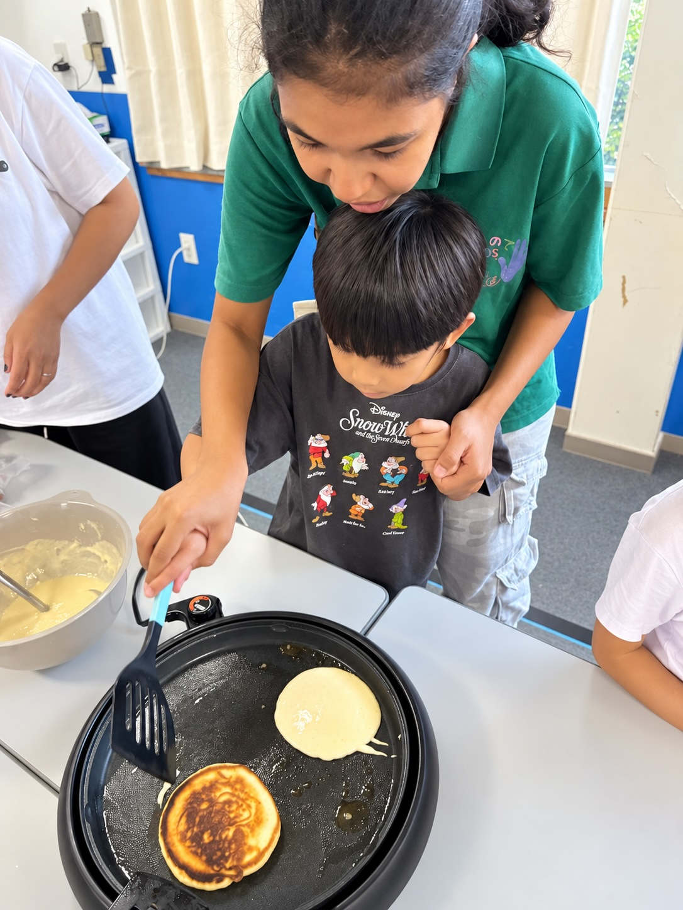
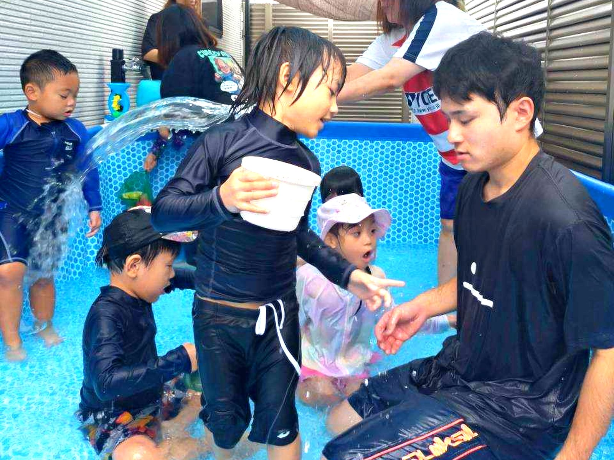
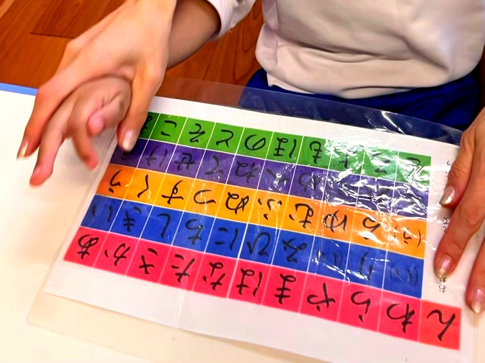
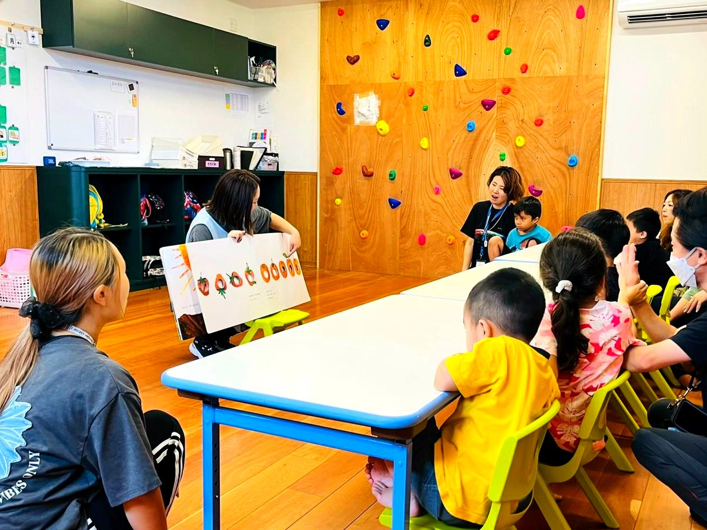
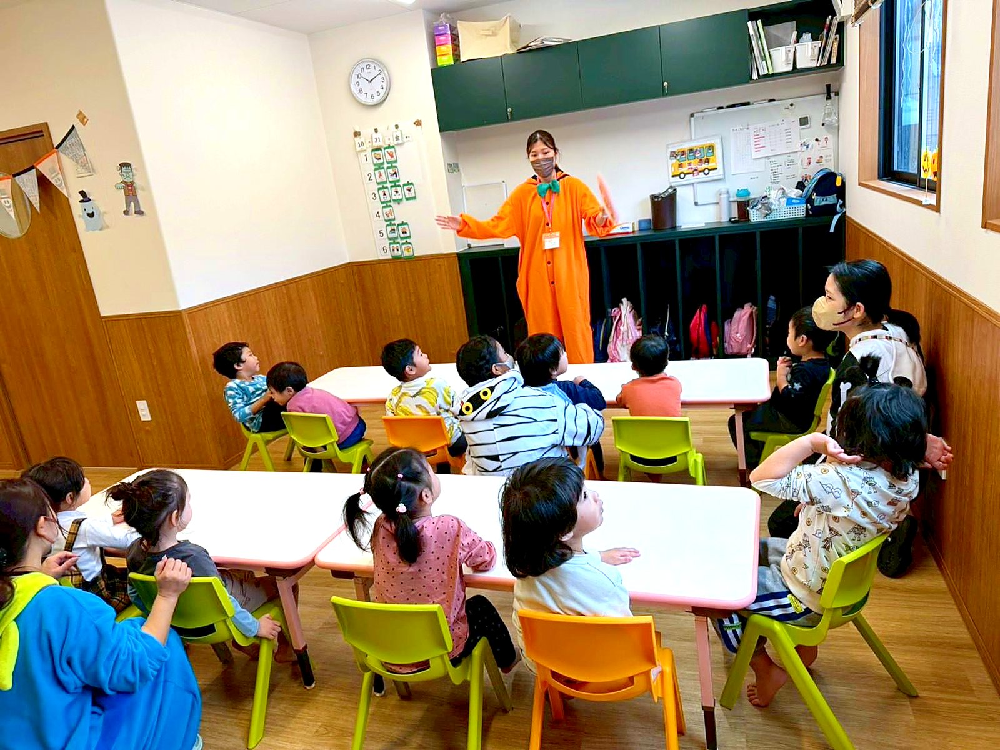
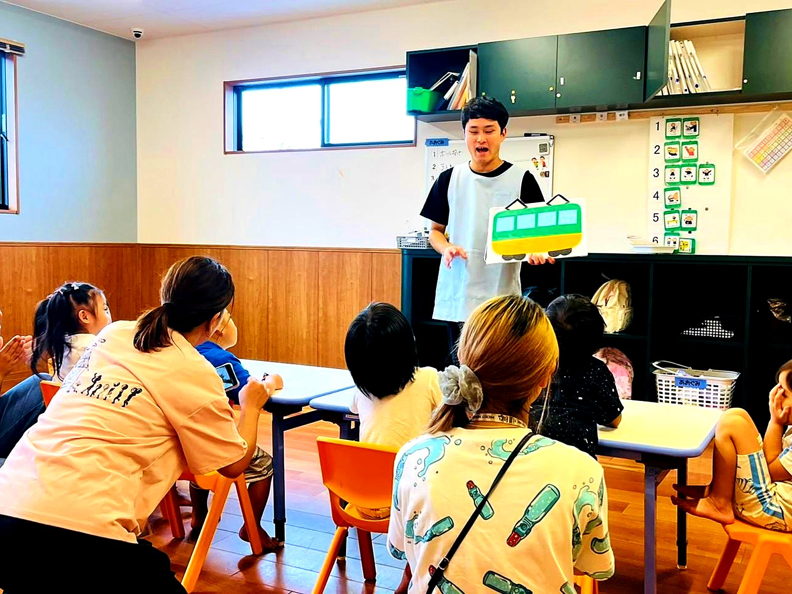
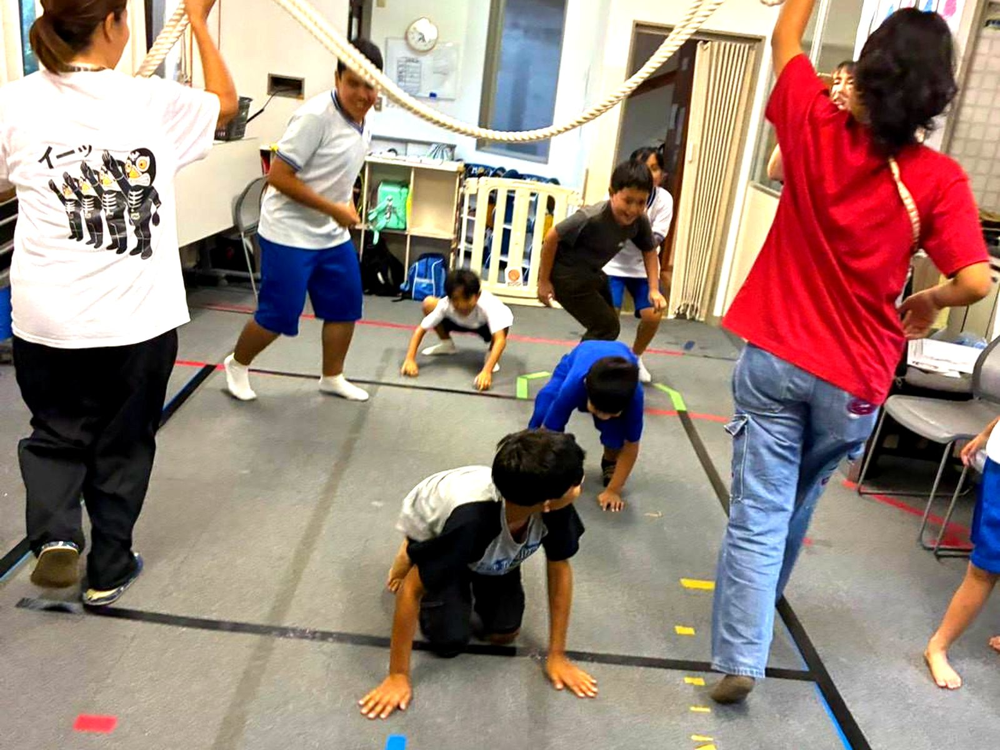

健康・生活
生活のリズムや身のまわりのことを、自分でできる力を育てます。

ひとつでも当てはまれば、まずはご相談ください。受給者証をお持ちでない段階でも大丈夫です。
ご利用の条件実際のご利用（契約）には、お住まいの市町村が発行する通所受給者証が必要です。申請の進め方はご利用案内でご説明しています。
お子さまの個性や成長のペースに合わせて、無理のない支援を行います。
ご家庭や学校と同じねらいで関わり、日々の成長を支えます。
英語・タガログ語・ビサヤ語・ポルトガル語で対応できるスタッフがいます（日本語とあわせて5つの言語）。
国が定める5つの領域すべてを見ながら、そのお子さまに必要なところを厚く支援します。訓練の時間をつくるのではなく、あそびと毎日の生活の中に組み込んでいくのが基本です。
生活のリズムや身のまわりのことを、自分でできる力を育てます。

体を動かして楽しみながら、バランスや感覚のはたらきを育てます。

見て、考えて、行動する力や、物事の理解を育てます。

ことばのやりとりや、気持ちを伝える力を育てます。

人との関わりの中で、思いやりや社会のルールを学びます。

個別支援計画にもとづき、その子だけの目標に取り組みます。
友だちとのやりとりの中で、順番や折り合いのつけ方を学びます。
ご家庭での関わり方をいっしょに考え、送迎時や面談でお伝えします。


かみのてKIDSには通訳スタッフがいます。対応できるのは、日本語と、下の4つの言語です。受給者証の申請や学校とのやりとりも、分かるところまでいっしょに進めます。
このサイトの表示言語は、日本語・English・Português です（スタッフの対応言語とは別です）。
多言語での支援を詳しく見るお電話（0574-66-3513）でご連絡ください。
実際の時間に体験していただけます。
お持ちでない場合も、申請の進め方からご案内します。
半年ごとのねらいを文書にしてご説明します。
かみのてでの支援がはじまります。
国籍や文化の違いを尊重し、すべての子どもが安心して自分らしく成長できる居場所を作り、豊かな人生を実現できる可能性を引き出します。
運営方針
できます。診断がなくてもご相談いただけます。ご利用には受給者証が必要ですが、その申請の進め方からご案内します。
できます。お子さんといっしょに来ていただいて、実際の時間に体験していただけます。保護者の方だけの見学でもかまいません。
未就学のお子さんは児童発達支援、小学生から高校生（18歳まで）は放課後等デイサービスとしてご利用いただけます。
費用の大部分は自治体の給付でまかなわれ、ご負担は原則1割です。世帯の所得に応じて月ごとの上限額が決まっているため、それを超えるお支払いは発生しません。
どんな場所で、どんなふうに過ごすのか。見ていただくのがいちばん分かりやすいです。
受給者証をお持ちでなくても、診断がまだでも、ご相談だけでかまいません。

写真はイメージです